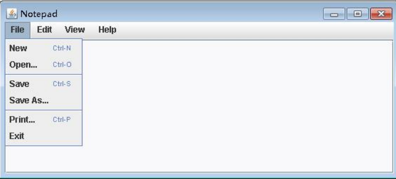
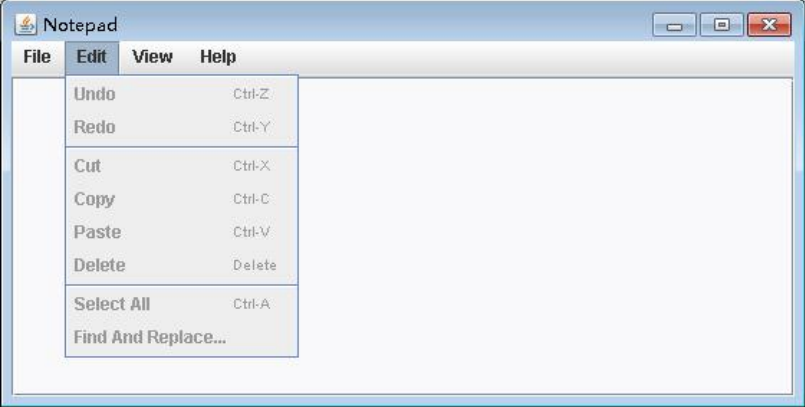
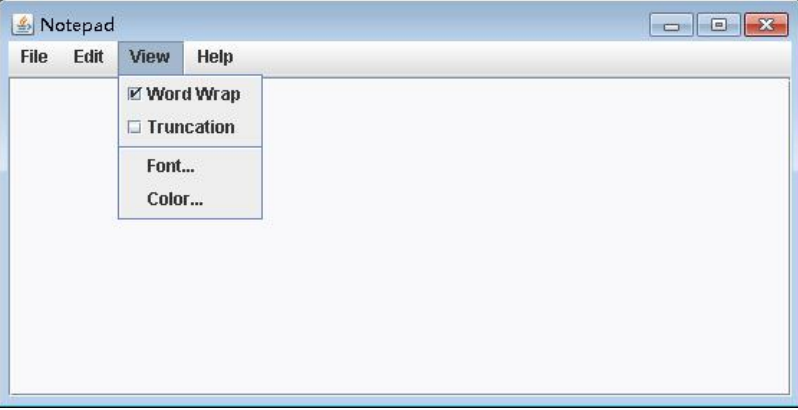
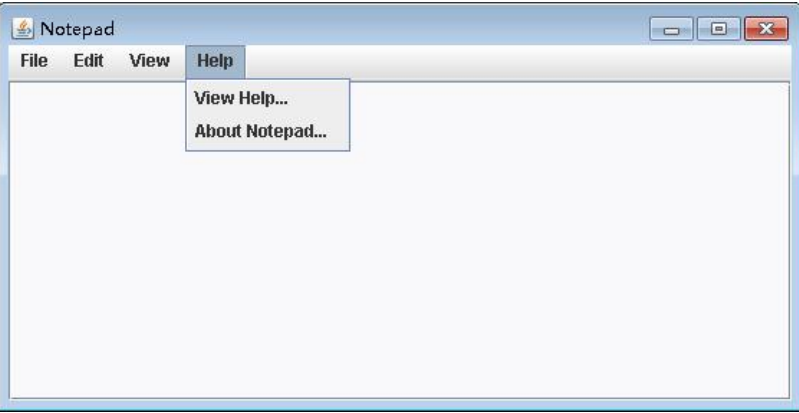
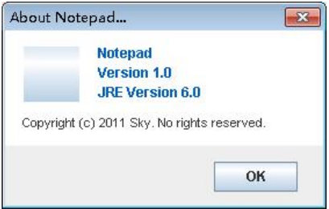

在 Windows 操作系统中，记事本是一个小的应用程序，采用一个简单的文本编辑器进行文字信息的记
录和存储。请仿照 Windows 的记事本，开发一个属于自己的记事本（Notepad）功能
记事本的应该具备的功能，基本要求如下：
（1） 菜单栏中包含文件、编辑、查看和帮助菜单，具体如下图所示。

（2） 文件菜单中具有新建、打开、保存、另存为、打印和退出功能，具体如下图所示。

（3） 编辑菜单中具有的功能有撤销、重做、剪切、复制、粘贴、删除、全选以及查找和替换，具
体如下图所示。

（4） 查看菜单中具有的功能包括字体、颜色等，具体如下图所示。

（5） 帮助菜单中的“View Help…”可以查看帮助文档，“About Notepad…”可以查看记事本的当前
版本。帮助菜单中具有的功能具体如下图所示。


(6) 程序代码如下所示：
AboutDialog.java
package notepad;
import java.awt.Color;
import java.awt.Font;
import java.awt.event.ActionEvent;
import java.awt.event.ActionListener;
import javax.swing.ImageIcon;
import javax.swing.JButton;
import javax.swing.JDialog;
import javax.swing.JFrame;
import javax.swing.JLabel;
import javax.swing.JPanel;
public class AboutDialog implements ActionListener {
public JDialog Dialog;
public JButton OK, Icon;
public JLabel Name, Version, Author, Java;
public JPanel Panel;
AboutDialog(JFrame notepad, int x, int y) {
Dialog = new JDialog(notepad, "About Notepad...", true);
OK = new JButton("OK");
Icon = new JButton(new ImageIcon("Notepad.jpg"));
Name = new JLabel("Notepad");
Version = new JLabel("Version 1.0");
Java = new JLabel("JRE Version 6.0");
Author = new JLabel("Copyright (c) 2011 Sky. No rights reserved.");
Panel = new JPanel();
Color c = new Color(0, 95, 191);
Name.setForeground(c);
Version.setForeground(c);
Java.setForeground(c);
Panel.setBackground(Color.WHITE);
OK.setFocusable(false);
Dialog.setSize(280, 180);
Dialog.setLocation(x, y);
Dialog.setResizable(false);
Dialog.setLayout(null);
Panel.setLayout(null);
OK.addActionListener(this);
Icon.setFocusable(false);
Icon.setBorderPainted(false);
Author.setFont(new Font(null, Font.PLAIN, 11));
Panel.add(Icon);
Panel.add(Name);
Panel.add(Version);
Panel.add(Author);
Panel.add(Java);
Dialog.add(Panel);
Dialog.add(OK);
Panel.setBounds(0, 0, 280, 100);
OK.setBounds(180, 114, 72, 26);
Name.setBounds(80, 10, 160, 20);
Version.setBounds(80, 27, 160, 20);
Author.setBounds(15, 70, 250, 20);
Java.setBounds(80, 44, 160, 20);
Icon.setBounds(16, 14, 48, 48);
}
public void actionPerformed(ActionEvent e) {
Dialog.setVisible(false);
}
}ColorDialog.java
package notepad;
import java.awt.Color;
import java.awt.Component;
import java.awt.Font;
import java.awt.GridLayout;
import java.awt.event.ActionEvent;
import java.awt.event.ActionListener;
import java.awt.event.KeyEvent;
import java.awt.event.KeyListener;
import java.awt.event.WindowEvent;
import java.awt.event.WindowListener;
import javax.swing.JButton;
import javax.swing.JDialog;
import javax.swing.JFrame;
import javax.swing.JLabel;
import javax.swing.JPanel;
import javax.swing.JTextArea;
import javax.swing.JTextField;
public class ColorDialog implements ActionListener, WindowListener{
public JDialog Dialog;
public JLabel NFL,NBL,SFL,SBL;
public JTextArea Normal,Selected;
public JButton NFB,NBB,SFB,SBB,OK,Cancel,Reset;
public Color NFC,NBC,SFC,SBC;
public ColorChooser Chooser;
public ColorDialog(JFrame notepad, int x, int y){
NFC=new Color(0,0,0);
NBC=new Color(249,249,251);
SFC=new Color(0,0,0);
SBC=new Color(191,207,223);
Dialog=new JDialog(notepad,"Color...",true);
NFL=new JLabel("Normal Foreground:");
NBL=new JLabel("Normal Background:");
SFL=new JLabel("Selected Foreground:");
SBL=new JLabel("Selected Background:");
Normal=new JTextArea("\n Normal 正常");
Selected=new JTextArea("\n Selected 选中 ");
NFB=new JButton("");
NBB=new JButton("");
SFB=new JButton("");
SBB=new JButton("");
OK=new JButton("OK");
Cancel=new JButton("Cancel");
Reset=new JButton("Reset");
Chooser=new ColorChooser(Dialog, x+65, y-15);
Normal.setEditable(false);
Normal.setFocusable(false);
Normal.setFont(new Font("新宋体", 0, 16));
Normal.setForeground(NFC);
Normal.setBackground(NBC);
Selected.setEditable(false);
Selected.setFocusable(false);
Selected.setFont(Normal.getFont());
Selected.setForeground(SFC);
Selected.setBackground(SBC);
NFB.setBackground(NFC);
NBB.setBackground(NBC);
SFB.setBackground(SFC);
SBB.setBackground(SBC);
Dialog.setLayout(null);
Dialog.setLocation(x, y);
Dialog.setSize(410, 220);
Dialog.setResizable(false);
Reset.setFocusable(false);
OK.setFocusable(false);
Cancel.setFocusable(false);
Dialog.add(Normal);
Dialog.add(Selected);
Dialog.add(NFL);
Dialog.add(NBL);
Dialog.add(SFL);
Dialog.add(SBL);
Dialog.add(SBB);
Dialog.add(SFB);
Dialog.add(NBB);
Dialog.add(NFB);
Dialog.add(OK);
Dialog.add(Cancel);
Dialog.add(Reset);
SBB.setBounds(144, 100, 60, 22);
SFB.setBounds(144, 70, 60, 22);
NBB.setBounds(144, 40, 60, 22);
NFB.setBounds(144, 10, 60, 22);
NFL.setBounds(10, 10, 130, 22);
NBL.setBounds(10, 40, 130, 22);
SFL.setBounds(10, 70, 130, 22);
SBL.setBounds(10, 100, 130, 22);
Normal.setBounds(220, 10, 174, 56);
Selected.setBounds(220, 66, 174, 56);
Reset.setBounds(10, 160, 74, 24);
OK.setBounds(236, 160, 74, 24);
Cancel.setBounds(320, 160, 74, 24);
Dialog.setDefaultCloseOperation(JFrame.DO_NOTHING_ON_CLOSE);
Dialog.addWindowListener(this);
NFB.addActionListener(this);
NBB.addActionListener(this);
SFB.addActionListener(this);
SBB.addActionListener(this);
Reset.addActionListener(this);
OK.addActionListener(this);
Cancel.addActionListener(this);
}
public void setTextAreaColor(){
Normal.setForeground(NFB.getBackground());
Normal.setBackground(NBB.getBackground());
Selected.setForeground(SFB.getBackground());
Selected.setBackground(SBB.getBackground());
}
public void cancel(){
Normal.setForeground(NFC);
Normal.setBackground(NBC);
Selected.setForeground(SFC);
Selected.setBackground(SBC);
NFB.setBackground(NFC);
NBB.setBackground(NBC);
SFB.setBackground(SFC);
SBB.setBackground(SBC);
Dialog.setVisible(false);
}
public void actionPerformed(ActionEvent e) {
Object obj=e.getSource();
if(obj==Reset){
NFB.setBackground(new Color(0,0,0));
NBB.setBackground(new Color(249,249,251));
SFB.setBackground(new Color(0,0,0));
SBB.setBackground(new Color(191,207,223));
setTextAreaColor();
}
else if(obj==OK){
NFC=NFB.getBackground();
NBC=NBB.getBackground();
SFC=SFB.getBackground();
SBC=SBB.getBackground();
Dialog.setVisible(false);
}
else if(obj==Cancel)
cancel();
else{
Chooser.init(((Component) obj).getBackground());
Chooser.Dialog.setVisible(true);
((Component) obj).setBackground(Chooser.New.getBackground());
setTextAreaColor();
}
}
public void windowClosing(WindowEvent e) {
cancel();
}
public void windowActivated(WindowEvent arg0) {}
public void windowClosed(WindowEvent arg0) {}
public void windowDeactivated(WindowEvent arg0) {}
public void windowDeiconified(WindowEvent arg0) {}
public void windowIconified(WindowEvent arg0) {}
public void windowOpened(WindowEvent arg0) {}
}
class ColorChooser implements ActionListener,WindowListener,KeyListener{
JDialog Dialog;
JButton Choice[][],Old,New,OK,Cancel;
JPanel Panel;
JTextField R,G,B;
JLabel OldLabel,NewLabel,RL,GL,BL;
ColorChooser(JDialog color,int x, int y){
Dialog=new JDialog(color,true);
Choice=new JButton[8][8];
Panel=new JPanel();
Old=new JButton("");
New=new JButton("");
OldLabel=new JLabel("Old:");
NewLabel=new JLabel("New:");
RL=new JLabel("R:");
GL=new JLabel("G:");
BL=new JLabel("B:");
R=new JTextField("");
G=new JTextField("");
B=new JTextField("");
OK=new JButton("OK");
Cancel=new JButton("Cancel");
Panel.setLayout(new GridLayout(8,8,0,0));
int i=0,j=0;
Color c;
Choice[0][7]=new JButton("");Choice[0][7].setBackground(new Color(255,255,255));
Choice[1][7]=new JButton("");Choice[1][7].setBackground(new Color(255,223,191));
Choice[2][7]=new JButton("");Choice[2][7].setBackground(new Color(255,207,207));
Choice[3][7]=new JButton("");Choice[3][7].setBackground(new Color(223,191,255));
Choice[4][7]=new JButton("");Choice[4][7].setBackground(new Color(207,207,255));
Choice[5][7]=new JButton("");Choice[5][7].setBackground(new Color(191,223,255));
Choice[6][7]=new JButton("");Choice[6][7].setBackground(new Color(207,255,207));
Choice[7][7]=new JButton("");Choice[7][7].setBackground(new Color(223,255,191));
for(i=0;i<8;i++){
c=Choice[i][7].getBackground();
for(j=0;j<8;j++){
if(j!=7){
Choice[i][j]=new JButton("");
Choice[i][j].setBackground(new Color(c.getRed()*(j+1)/8,c.getGreen()*(j+1)/8,c.getBlue()*(j+1)/8));
}
Choice[i][j].setFocusable(false);
Choice[i][j].addActionListener(this);
Panel.add(Choice[i][j]);
}
}
Dialog.setSize(280,250);
Dialog.setLayout(null);
Dialog.setLocation(x, y);
Dialog.setResizable(false);
Dialog.add(Panel);
Panel.setBounds(10, 10, 160, 160);
Dialog.add(Old);
Dialog.add(OldLabel);
Old.setEnabled(false);
Old.setBorderPainted(false);
Old.setBounds(214, 10, 44, 22);
OldLabel.setBounds(180, 10, 44, 22);
Dialog.add(New);
Dialog.add(NewLabel);
New.setEnabled(false);
New.setBorderPainted(false);
New.setBounds(214, 32, 44, 22);
NewLabel.setBounds(180, 32, 44, 22);
Dialog.add(R);
Dialog.add(G);
Dialog.add(B);
R.setBounds(214, 97, 44, 22);
G.setBounds(214, 123, 44, 22);
B.setBounds(214, 149, 44, 22);
Dialog.add(RL);
Dialog.add(GL);
Dialog.add(BL);
RL.setBounds(196, 97, 16, 22);
GL.setBounds(196, 123, 16, 22);
BL.setBounds(196, 149, 16, 22);
Dialog.add(OK);
Dialog.add(Cancel);
OK.setFocusable(false);
Cancel.setFocusable(false);
OK.setBounds(106, 190, 74, 24);
Cancel.setBounds(190, 190, 74, 24);
OK.addActionListener(this);
Cancel.addActionListener(this);
G.addKeyListener(this);
R.addKeyListener(this);
B.addKeyListener(this);
}
public void setText(Color c){
R.setText(String.valueOf(c.getRed()));
G.setText(String.valueOf(c.getGreen()));
B.setText(String.valueOf(c.getBlue()));
}
public void init(Color c){
New.setBackground(c);
Old.setBackground(c);
setText(c);
}
public void actionPerformed(ActionEvent e) {
Object obj=e.getSource();
if(obj==OK) Dialog.setVisible(false);
else if(obj==Cancel){
New.setBackground(Old.getBackground());
Dialog.setVisible(false);
}
else{
New.setBackground(((Component) obj).getBackground());
setText(New.getBackground());
}
}
public void windowClosing(WindowEvent e) {
New.setBackground(Old.getBackground());
Dialog.setVisible(false);
}
public void keyReleased(KeyEvent e) {
try{
int r,g,b;
if(R.getText().length()==0) r=0;
else r=Integer.valueOf(R.getText());
if(G.getText().length()==0) g=0;
else g=Integer.valueOf(G.getText());
if(B.getText().length()==0) b=0;
else b=Integer.valueOf(B.getText());
New.setBackground(new Color(r,g,b));
}
catch(NumberFormatException nfe){setText(New.getBackground());}
catch(IllegalArgumentException iae){setText(New.getBackground());}
}
public void keyPressed(KeyEvent e) {}
public void keyTyped(KeyEvent e) {}
public void windowActivated(WindowEvent arg0) {}
public void windowClosed(WindowEvent arg0) {}
public void windowDeactivated(WindowEvent arg0) {}
public void windowDeiconified(WindowEvent arg0) {}
public void windowIconified(WindowEvent arg0) {}
public void windowOpened(WindowEvent arg0) {}
}
EnsureDialog.java
package notepad;
import java.awt.BorderLayout;
import java.awt.Color;
import java.awt.FlowLayout;
import java.awt.Font;
import java.awt.event.ActionEvent;
import java.awt.event.ActionListener;
import java.awt.event.WindowEvent;
import java.awt.event.WindowListener;
import javax.swing.JButton;
import javax.swing.JDialog;
import javax.swing.JFrame;
import javax.swing.JLabel;
import javax.swing.JPanel;
public class EnsureDialog implements WindowListener, ActionListener {
public int YES, NO, CANCEL, Status;
public JDialog Ensure;
public JButton Yes, No, Cancel;
public JLabel Question;
public JPanel ButtonPanel, TextPanel;
EnsureDialog(JFrame notepad, int x, int y) {
YES = 0;
NO = 1;
CANCEL = 2;
Status = CANCEL;
Ensure = new JDialog(notepad, true);
/*
* 这里的模式标志true的作用是使对话框处于notepad的上端， 并且当对话框显示时进程处于停滞状态， 直到对话框不再显示为止。在本程序中
* ，由于对对话框进行了事件监听处理，当对话框消失时状态标 志Status同时发生了变化 ，这样就可以在进程继续时获得新的Status值
*/
Yes = new JButton("Yes");
No = new JButton("No");
Cancel = new JButton("Cancel");
Question = new JLabel(" Do you want to save changes to the file?");
ButtonPanel = new JPanel();
TextPanel = new JPanel();
ButtonPanel.setLayout(new FlowLayout(FlowLayout.CENTER, 16, 10));
TextPanel.setLayout(new BorderLayout());
Ensure.setLayout(new BorderLayout());
ButtonPanel.add(Yes);
ButtonPanel.add(No);
ButtonPanel.add(Cancel);
TextPanel.add(Question);
Ensure.add(TextPanel, BorderLayout.CENTER);
Ensure.add(ButtonPanel, BorderLayout.SOUTH);
Ensure.setLocation(x, y);
Ensure.setSize(360, 140);
Ensure.setResizable(false);
TextPanel.setBackground(Color.WHITE);
Question.setFont(new Font(null, Font.PLAIN, 16));
Question.setForeground(new Color(0, 95, 191));
Yes.setFocusable(false);
No.setFocusable(false);
Cancel.setFocusable(false);
Ensure.setDefaultCloseOperation(JFrame.DO_NOTHING_ON_CLOSE);
Ensure.addWindowListener(this);
Yes.addActionListener(this);
No.addActionListener(this);
Cancel.addActionListener(this);
}
public void actionPerformed(ActionEvent e) {
if (e.getSource() == Yes)
Status = YES;
else if (e.getSource() == No)
Status = NO;
else if (e.getSource() == Cancel)
Status = CANCEL;
Ensure.setVisible(false);
}
public void windowClosing(WindowEvent e) {
Status = CANCEL;
Ensure.setVisible(false);
}
public void windowActivated(WindowEvent e) {
}
public void windowClosed(WindowEvent e) {
}
public void windowDeactivated(WindowEvent e) {
}
public void windowDeiconified(WindowEvent e) {
}
public void windowIconified(WindowEvent e) {
}
public void windowOpened(WindowEvent e) {
}
}
FindAndReplace.java
package notepad;
import java.awt.TextField;
import javax.swing.ButtonGroup;
import javax.swing.JButton;
import javax.swing.JCheckBox;
import javax.swing.JDialog;
import javax.swing.JFrame;
import javax.swing.JLabel;
import javax.swing.JRadioButton;
public class FindAndReplace {
public JDialog Dialog;
public JButton FindNext, Replace, ReplaceAll, Finish;
public JCheckBox MatchCase;
public JRadioButton Up, Down;
public ButtonGroup DirectionGroup;
public JLabel FindWhat, ReplaceWith, Direction;
public TextField FindText, ReplaceText;
FindAndReplace(JFrame notepad) {
Dialog = new JDialog(notepad, "Find And Replace...", false);
/*
* 与EnsureDialog不同的是 ， 这里的模式标志false使对话框始终处于notepad的上端 ， 但点击notepad
* 时notepad会继续处于活动状态 ， 对话框则变成不活动状态
*/
FindNext = new JButton("Find Next");
Replace = new JButton("Replace");
ReplaceAll = new JButton("Replace All");
Finish = new JButton("Finish");
MatchCase = new JCheckBox("Match Case", false);
Down = new JRadioButton("Down", true);
Up = new JRadioButton("Up", false);
FindWhat = new JLabel("Find What:");
ReplaceWith = new JLabel("Replace With:");
Direction = new JLabel("Direction:");
FindText = new TextField("");
ReplaceText = new TextField("");
Dialog.setSize(380, 160);
Dialog.setResizable(false);
FindNext.setFocusable(false);
Replace.setFocusable(false);
ReplaceAll.setFocusable(false);
MatchCase.setFocusable(false);
Finish.setFocusable(false);
Up.setFocusable(false);
Down.setFocusable(false);
DirectionGroup = new ButtonGroup();
Dialog.setLayout(null);
FindWhat.setBounds(10, 12, 80, 22);
ReplaceWith.setBounds(10, 42, 80, 22);
FindText.setBounds(95, 12, 160, 22);
ReplaceText.setBounds(95, 42, 160, 22);
FindNext.setBounds(265, 12, 98, 22);
Replace.setBounds(265, 42, 98, 22);
ReplaceAll.setBounds(265, 72, 98, 22);
Direction.setBounds(10, 72, 80, 22);
MatchCase.setBounds(6, 102, 98, 22);
Down.setBounds(95, 72, 80, 22);
Up.setBounds(175, 72, 80, 22);
Finish.setBounds(265, 102, 98, 22);
DirectionGroup.add(Up);
DirectionGroup.add(Down);
Dialog.add(FindWhat);
Dialog.add(MatchCase);
Dialog.add(FindText);
Dialog.add(FindNext);
Dialog.add(Direction);
Dialog.add(ReplaceWith);
Dialog.add(ReplaceText);
Dialog.add(Replace);
Dialog.add(ReplaceAll);
Dialog.add(Finish);
Dialog.add(Down);
Dialog.add(Up);
}
}
FontDialog.java
package notepad;
import java.awt.Font;
import java.awt.GraphicsEnvironment;
import java.awt.List;
import java.awt.event.ActionEvent;
import java.awt.event.ActionListener;
import java.awt.event.ItemEvent;
import java.awt.event.ItemListener;
import java.awt.event.WindowEvent;
import java.awt.event.WindowListener;
import javax.swing.JButton;
import javax.swing.JCheckBox;
import javax.swing.JDialog;
import javax.swing.JFrame;
import javax.swing.JTextArea;
public class FontDialog implements ItemListener, ActionListener, WindowListener{
public JDialog Dialog;
public JCheckBox Bold,Italic;
public List Size,Name;
public int FontName;
public int FontStyle;
public int FontSize;
public JButton OK,Cancel;
public JTextArea Text;
FontDialog(JFrame notepad, int x, int y) {
GraphicsEnvironment g=GraphicsEnvironment.getLocalGraphicsEnvironment();
String name[]=g.getAvailableFontFamilyNames();
Bold=new JCheckBox("Bold",false);
Italic=new JCheckBox("Italic",false);
Dialog=new JDialog(notepad,"Font...",true);
Text=new JTextArea("字体预览用例\n9876543210\nAaBbCcXxYyZz");
OK=new JButton("OK");
Cancel=new JButton("Cancel");
Size=new List();
Name=new List();
int i=0;
Name.add("Default Value");
for(i=0;i<name.length;i++) Name.add(name[i]);
for(i=8;i<257;i++) Size.add(String.valueOf(i));
FontName=0;
FontStyle=0;
FontSize=8;
Dialog.setLayout(null);
Dialog.setLocation(x, y);
Dialog.setSize(480, 306);
Dialog.setResizable(false);
OK.setFocusable(false);
Cancel.setFocusable(false);
Bold.setFocusable(false);
Italic.setFocusable(false);
Name.setFocusable(false);
Size.setFocusable(false);
Name.setBounds(10, 10, 212, 259);
Dialog.add(Name);
Bold.setBounds(314, 10, 64, 22);
Dialog.add(Bold);
Italic.setBounds(388, 10, 64, 22);
Dialog.add(Italic);
Size.setBounds(232, 10, 64, 259);
Dialog.add(Size);
Text.setBounds(306, 40, 157, 157);
Dialog.add(Text);
OK.setBounds(306, 243, 74, 26);
Dialog.add(OK);
Cancel.setBounds(390, 243, 74, 26);
Dialog.add(Cancel);
Name.select(FontName);
Size.select(FontSize);
Text.setFont(getFont());
Dialog.setDefaultCloseOperation(JFrame.DO_NOTHING_ON_CLOSE);
Name.addItemListener(this);
Size.addItemListener(this);
Bold.addItemListener(this);
Italic.addItemListener(this);
OK.addActionListener(this);
Cancel.addActionListener(this);
Dialog.addWindowListener(this);
}
public void itemStateChanged(ItemEvent e) {
Text.setFont(getFont());
}
public void actionPerformed(ActionEvent e) {
if(e.getSource()==OK){
FontName=Name.getSelectedIndex();
FontStyle=getStyle();
FontSize=Size.getSelectedIndex();
Dialog.setVisible(false);
}
else cancel();
}
public void windowClosing(WindowEvent e) {
cancel();
}
public Font getFont(){
if(Name.getSelectedIndex()==0) return new Font("新宋体",getStyle(),Size.getSelectedIndex()+8);
else return new Font(Name.getSelectedItem(),getStyle(),Size.getSelectedIndex()+8);
}
public void cancel(){
Name.select(FontName);
Size.select(FontSize);
setStyle();
Text.setFont(getFont());
Dialog.setVisible(false);
}
public void setStyle(){
if(FontStyle==0 || FontStyle==2) Bold.setSelected(false);
else Bold.setSelected(true);
if(FontStyle==0 || FontStyle==1) Italic.setSelected(false);
else Italic.setSelected(true);
}
public int getStyle(){
int bold=0,italic=0;
if(Bold.isSelected()) bold=1;
if(Italic.isSelected()) italic=1;
return bold+italic*2;
}
public void windowActivated(WindowEvent arg0) {}
public void windowClosed(WindowEvent arg0) {}
public void windowDeactivated(WindowEvent arg0) {}
public void windowDeiconified(WindowEvent arg0) {}
public void windowIconified(WindowEvent arg0) {}
public void windowOpened(WindowEvent arg0) {}
}
MenuList.java
package notepad;
import javax.swing.JCheckBoxMenuItem;
import javax.swing.JMenu;
import javax.swing.JMenuBar;
import javax.swing.JMenuItem;
import javax.swing.KeyStroke;
public class MenuList{
public JMenuBar Menu;
public JMenu File, Edit, View, Help;
public JMenuItem
New,Open,Save,SaveAs,Print,Exit,
ViewHelp,AboutNotepad,
Font,Color,
Undo,Redo,Cut,Copy,Paste,Delete,SelectAll,FindAndReplace;
public JCheckBoxMenuItem WordWrap,Truncation;
MenuList(){
Menu=new JMenuBar();
File=new JMenu(" File ");
New=new JMenuItem("New");
Open=new JMenuItem("Open...");
Save=new JMenuItem("Save");
SaveAs=new JMenuItem("Save As...");
Print=new JMenuItem("Print...");
Exit=new JMenuItem("Exit");
Help=new JMenu(" Help ");
ViewHelp=new JMenuItem("View Help...");
AboutNotepad=new JMenuItem("About Notepad...");
View=new JMenu(" View ");
WordWrap=new JCheckBoxMenuItem("Word Wrap",true);
Truncation=new JCheckBoxMenuItem("Truncation",false);
Font=new JMenuItem("Font...");
Color=new JMenuItem("Color...");
Edit=new JMenu(" Edit ");
Undo=new JMenuItem("Undo");
Redo=new JMenuItem("Redo");
Cut=new JMenuItem("Cut");
Copy=new JMenuItem("Copy");
Paste=new JMenuItem("Paste");
Delete=new JMenuItem("Delete");
SelectAll=new JMenuItem("Select All");
FindAndReplace=new JMenuItem("Find And Replace...");
Undo.setEnabled(false);
Redo.setEnabled(false);
Edit.add(Undo);
Edit.add(Redo);
Edit.addSeparator();
Edit.add(Cut);
Edit.add(Copy);
Edit.add(Paste);
Edit.add(Delete);
Edit.addSeparator();
Edit.add(SelectAll);
Edit.add(FindAndReplace);
View.add(WordWrap);
View.add(Truncation);
View.addSeparator();
View.add(Font);
View.add(Color);
Help.add(ViewHelp);
Help.add(AboutNotepad);
File.add(New);
File.add(Open);
File.addSeparator();
File.add(Save);
File.add(SaveAs);
File.addSeparator();
File.add(Print);
File.add(Exit);
Menu.add(File);
Menu.add(Edit);
Menu.add(View);
Menu.add(Help);
New.setAccelerator(KeyStroke.getKeyStroke('N',128));
Open.setAccelerator(KeyStroke.getKeyStroke('O',128));
Save.setAccelerator(KeyStroke.getKeyStroke('S',128));
Print.setAccelerator(KeyStroke.getKeyStroke('P',128));
Undo.setAccelerator(KeyStroke.getKeyStroke('Z',128));
Redo.setAccelerator(KeyStroke.getKeyStroke('Y',128));
Cut.setAccelerator(KeyStroke.getKeyStroke('X',128));
Copy.setAccelerator(KeyStroke.getKeyStroke('C',128));
Paste.setAccelerator(KeyStroke.getKeyStroke('V',128));
Delete.setAccelerator(KeyStroke.getKeyStroke(127,0));
SelectAll.setAccelerator(KeyStroke.getKeyStroke('A',128));
}
}
TextArea.java
package notepad;
import java.awt.Toolkit;
import java.awt.datatransfer.Clipboard;
import java.awt.datatransfer.DataFlavor;
import java.awt.datatransfer.Transferable;
import java.awt.event.ActionEvent;
import java.awt.event.ActionListener;
import java.awt.event.ItemEvent;
import java.awt.event.ItemListener;
import java.awt.event.MouseEvent;
import java.awt.event.MouseListener;
import java.io.BufferedWriter;
import java.io.FileReader;
import java.io.FileWriter;
import java.io.IOException;
import javax.swing.JFrame;
import javax.swing.JMenuItem;
import javax.swing.JPopupMenu;
import javax.swing.JScrollPane;
import javax.swing.JTextArea;
import javax.swing.event.MenuEvent;
import javax.swing.event.MenuListener;
import javax.swing.event.UndoableEditEvent;
import javax.swing.event.UndoableEditListener;
import javax.swing.undo.UndoManager;
public class TextArea extends JTextArea implements MouseListener,UndoableEditListener,
MenuListener,ActionListener,ItemListener{
private static final long serialVersionUID = 1L;
public boolean Saved;
public String Name,Path;
public JScrollPane Pane;
public JPopupMenu Popup;
public JMenuItem Redo,Undo,Cut,Copy,Paste,Delete,SelectAll,FindAndReplace;
public UndoManager Manager;
public MenuList menu;
public FindAndReplace find;
TextArea(JFrame notepad,int x,int y){
super();
Saved=true;
Name=null;
Path=null;
Popup=new JPopupMenu();
Undo=new JMenuItem(" Undo");
Redo=new JMenuItem(" Redo");
Cut=new JMenuItem(" Cut");
Copy=new JMenuItem(" Copy");
Paste=new JMenuItem(" Paste");
Delete=new JMenuItem(" Delete");
SelectAll=new JMenuItem(" Select All");
FindAndReplace=new JMenuItem(" Find And Replace...");
Pane=new JScrollPane(this);
Manager=new UndoManager();
menu=new MenuList();
find=new FindAndReplace(notepad);
find.Dialog.setLocation(x,y);
Undo.setEnabled(false);
Redo.setEnabled(false);
setLineWrap(true);
setWrapStyleWord(true);
Manager.setLimit(-1);
Popup.add(Undo);
Popup.add(Redo);
Popup.addSeparator();
Popup.add(Cut);
Popup.add(Copy);
Popup.add(Paste);
Popup.add(Delete);
Popup.addSeparator();
Popup.add(SelectAll);
Popup.add(FindAndReplace);
add(Popup);
menu.Edit.addMenuListener(this);
menu.WordWrap.addItemListener(this);
menu.Truncation.addItemListener(this);
getDocument().addUndoableEditListener(this);
addMouseListener(this);
find.FindNext.addActionListener(this);
find.Replace.addActionListener(this);
find.ReplaceAll.addActionListener(this);
find.Finish.addActionListener(this);
}
public void saveFile(){
try {
FileWriter fw = new FileWriter(Path+Name,false);
BufferedWriter bw=new BufferedWriter(fw);
bw.write(getText());
bw.close();
fw.close();
Saved=true;
} catch (IOException e){}
}
public void openFile(){
try {
int c;
StringBuffer sb=new StringBuffer();
FileReader fr=new FileReader(Path+Name);
setText(null);
while((c=fr.read())!=-1)
sb.append((char)c);
setText(sb.toString());
Saved=true;
fr.close();
Undo.setEnabled(false);
Redo.setEnabled(false);
menu.Undo.setEnabled(false);
menu.Redo.setEnabled(false);
}
catch (IOException e){}
}
public void delete(){
int start=getSelectionStart();
int end=getSelectionEnd();
replaceRange("",start,end);
}
public int lastOf(String s1,int i){
String s=getText();
if(find.MatchCase.isSelected()) return s.lastIndexOf(s1,i);
else{
s=s.toLowerCase();
return s.lastIndexOf(s1.toLowerCase(),i);
}
}
public int nextOf(String s1,int i){
String s=getText();
if(find.MatchCase.isSelected()) return s.indexOf(s1,i);
else{
s=s.toLowerCase();
return s.indexOf(s1.toLowerCase(),i);
}
}
public void actionPerformed(ActionEvent e){
Object obj=e.getSource();
if(obj==find.Finish) find.Dialog.setVisible(false);
String s1=find.FindText.getText();
String s2=find.ReplaceText.getText();
int len1=s1.length(),len2=s2.length();
if(len1<1) return;
int head=getSelectionStart(),rear=getSelectionEnd();
if(obj==find.Replace){
if(head<rear) replaceRange(s2,head,rear);
else obj=find.FindNext;
}
if(obj==find.FindNext){
if(find.Up.isSelected()){
head=lastOf(s1,head-len1);
if(head<0) return;
select(head, head+len1);
}
else{
rear=nextOf(s1, rear);
if(rear<0) return;
select(rear,rear+len1);
}
}
else if(obj==find.ReplaceAll){
rear=0;
while(true){
rear=nextOf(s1,rear);
if(rear<0) return;
replaceRange(s2,rear,rear+len1);
rear=rear+len2;
setCaretPosition(rear);
}
}
}
public void menuSelected(MenuEvent e){
Clipboard Board=Toolkit.getDefaultToolkit().getSystemClipboard();
Transferable contents = Board.getContents(Board);
DataFlavor flavor = DataFlavor.stringFlavor;
if(contents.isDataFlavorSupported(flavor))
menu.Paste.setEnabled(true);
else
menu.Paste.setEnabled(false);
if(getSelectedText()!=null){
menu.Cut.setEnabled(true);
menu.Copy.setEnabled(true);
menu.Delete.setEnabled(true);
}
else{
menu.Cut.setEnabled(false);
menu.Copy.setEnabled(false);
menu.Delete.setEnabled(false);
}
if(getText().isEmpty()){
menu.SelectAll.setEnabled(false);
menu.FindAndReplace.setEnabled(false);
}
else{
menu.SelectAll.setEnabled(true);
menu.FindAndReplace.setEnabled(true);
}
}
public void undoableEditHappened(UndoableEditEvent e){
Manager.addEdit(e.getEdit());
Saved=false;
menu.Undo.setEnabled(true);
Undo.setEnabled(true);
menu.Redo.setEnabled(false);
Redo.setEnabled(false);
}
public void mouseReleased(MouseEvent e) {
if(e.isPopupTrigger())
{
Clipboard Board=Toolkit.getDefaultToolkit().getSystemClipboard();
Transferable contents = Board.getContents(Board);
DataFlavor flavor = DataFlavor.stringFlavor;
if(contents.isDataFlavorSupported(flavor))
Paste.setEnabled(true);
else
Paste.setEnabled(false);
if(getSelectedText()!=null){
Cut.setEnabled(true);
Copy.setEnabled(true);
Delete.setEnabled(true);
}
else{
Cut.setEnabled(false);
Copy.setEnabled(false);
Delete.setEnabled(false);
}
if(getText().isEmpty()){
SelectAll.setEnabled(false);
FindAndReplace.setEnabled(false);
}
else{
SelectAll.setEnabled(true);
FindAndReplace.setEnabled(true);
}
Popup.show(this,e.getX(),e.getY());
}
}
public void itemStateChanged(ItemEvent e) {
if(e.getSource()==menu.WordWrap){
setLineWrap(menu.WordWrap.isSelected());
menu.Truncation.setEnabled(menu.WordWrap.isSelected());
}
else
setWrapStyleWord(!menu.Truncation.isSelected());
}
public void mousePressed(MouseEvent e) {}
public void mouseClicked(MouseEvent e) {}
public void mouseEntered(MouseEvent e) {}
public void mouseExited(MouseEvent e) {}
public void menuCanceled(MenuEvent e) {}
public void menuDeselected(MenuEvent e) {}
}
Notepad.java
package notepad;
import java.awt.Dimension;
import java.awt.FileDialog;
import java.awt.Image;
import java.awt.Toolkit;
import java.awt.event.ActionEvent;
import java.awt.event.ActionListener;
import java.awt.event.WindowEvent;
import java.awt.event.WindowListener;
import java.awt.print.PrinterException;
import javax.swing.JFrame;
public class Notepad implements ActionListener,WindowListener{
static Dimension screen=Toolkit.getDefaultToolkit().getScreenSize();
static Image icon=Toolkit.getDefaultToolkit().getImage("Notepad.png");
JFrame notepad;
EnsureDialog ensure;
TextArea text;
FileDialog dialog;
FontDialog font;
ColorDialog color;
AboutDialog about;
Notepad(){
notepad=new JFrame("Notepad");
dialog=new FileDialog(notepad);
text=new TextArea(notepad,screen.width/2-190,screen.height/2-90);
ensure=new EnsureDialog(notepad,screen.width/2-180,screen.height/2-80);
font=new FontDialog(notepad,screen.width/2-240,screen.height/2-150);
color=new ColorDialog(notepad,screen.width/2-205,screen.height/2-110);
about=new AboutDialog(notepad,screen.width/2-140,screen.height/2-100);
notepad.setJMenuBar(text.menu.Menu);
notepad.add(text.Pane);
notepad.setSize(640,420);
notepad.setLocation(screen.width/2-320,screen.height/2-220);
notepad.setMinimumSize(new Dimension(185,185));
notepad.setIconImage(icon);
notepad.setDefaultCloseOperation(JFrame.DO_NOTHING_ON_CLOSE);
notepad.addWindowListener(this);
text.setFont(font.getFont());
text.setForeground(color.NFC);
text.setBackground(color.NBC);
text.setSelectedTextColor(color.SFC);
text.setSelectionColor(color.SBC);
text.menu.Save.addActionListener(this);
text.menu.SaveAs.addActionListener(this);
text.menu.Open.addActionListener(this);
text.menu.New.addActionListener(this);
text.menu.Exit.addActionListener(this);
text.menu.Undo.addActionListener(this);
text.menu.Redo.addActionListener(this);
text.menu.Cut.addActionListener(this);
text.menu.Copy.addActionListener(this);
text.menu.Paste.addActionListener(this);
text.menu.Delete.addActionListener(this);
text.menu.SelectAll.addActionListener(this);
text.menu.FindAndReplace.addActionListener(this);
text.menu.WordWrap.addActionListener(this);
text.menu.Truncation.addActionListener(this);
text.menu.Font.addActionListener(this);
text.menu.Color.addActionListener(this);
text.menu.ViewHelp.addActionListener(this);
text.menu.AboutNotepad.addActionListener(this);
text.Undo.addActionListener(this);
text.Redo.addActionListener(this);
text.Cut.addActionListener(this);
text.Copy.addActionListener(this);
text.Paste.addActionListener(this);
text.Delete.addActionListener(this);
text.SelectAll.addActionListener(this);
text.FindAndReplace.addActionListener(this);
}
public void windowClosing(WindowEvent e) {
if(text.Saved) System.exit(0);
else ensure.Ensure.setVisible(true);
if(ensure.Status==ensure.YES && saveFile()) System.exit(0);
else if(ensure.Status==ensure.NO) System.exit(0);
}
public void actionPerformed(ActionEvent e) {
Object obj=e.getSource();
if(obj==text.menu.Save) saveFile();
else if(obj==text.menu.SaveAs) saveAsFile();
else if(obj==text.menu.New){
if(!(text.Saved)){
ensure.Ensure.setVisible(true);
if(ensure.Status==ensure.YES && saveFile()){}
else if(ensure.Status==ensure.NO){}
else return;
}
newFile();
}
else if(obj==text.menu.Open){
if(!(text.Saved)){
ensure.Ensure.setVisible(true);
if(ensure.Status==ensure.YES && saveFile()){}
else if(ensure.Status==ensure.NO){}
else return;
}
openFile();
}
else if(obj==text.menu.Print){
try {
text.print();
} catch (PrinterException pe){}
}
else if(obj==text.menu.Exit){
if(text.Saved) System.exit(0);
else ensure.Ensure.setVisible(true);
if(ensure.Status==ensure.YES && saveFile()) System.exit(0);
else if(ensure.Status==ensure.NO) System.exit(0);
}
else if(obj==text.menu.Undo || obj==text.Undo){
text.Manager.undo();
text.Saved=false;
text.menu.Redo.setEnabled(true);
text.Redo.setEnabled(true);
if(!text.Manager.canUndo()){
text.menu.Undo.setEnabled(false);
text.Undo.setEnabled(false);
}
}
else if(obj==text.menu.Redo || obj==text.Redo){
text.Manager.redo();
text.Saved=false;
text.menu.Undo.setEnabled(true);
text.Undo.setEnabled(true);
if(!text.Manager.canRedo()){
text.menu.Redo.setEnabled(false);
text.Redo.setEnabled(false);
}
}
else if(obj==text.Cut || obj==text.menu.Cut){
text.cut();
}
else if(obj==text.Copy || obj==text.menu.Copy){
text.copy();
}
else if(obj==text.Paste || obj==text.menu.Paste){
text.paste();
}
else if(obj==text.Delete || obj==text.menu.Delete){
text.delete();
}
else if(obj==text.SelectAll || obj==text.menu.SelectAll){
text.selectAll();
}
else if(obj==text.FindAndReplace || obj==text.menu.FindAndReplace){
text.find.Dialog.setVisible(true);
}
else if(obj==text.menu.Font){
font.Dialog.setVisible(true);
if(text.getFont()!=font.getFont())
text.setFont(font.getFont());
}
else if(obj==text.menu.Color){
color.Dialog.setVisible(true);
text.setForeground(color.NFC);
text.setBackground(color.NBC);
text.setSelectedTextColor(color.SFC);
text.setSelectionColor(color.SBC);
text.setCaretColor(color.NFC);
}
else if(obj==text.menu.AboutNotepad){
about.Dialog.setVisible(true);
}
}
public boolean saveFile(){
if(text.Name==null){
dialog.setMode(FileDialog.SAVE);
dialog.setTitle("Save As...");
dialog.setFile("Untitled.txt");
dialog.setVisible(true);
text.Path=dialog.getDirectory();
text.Name=dialog.getFile();
}
if(text.Name==null) return false;
text.saveFile();
notepad.setTitle(text.Name+" - Notepad");
return true;
}
public void saveAsFile(){
String path=text.Path;
String name=text.Name;
dialog.setMode(FileDialog.SAVE);
dialog.setTitle("Save As...");
if(text.Name==null)
dialog.setFile("Untitled.txt");
else dialog.setFile(text.Name);
dialog.setVisible(true);
text.Path=dialog.getDirectory();
text.Name=dialog.getFile();
if(text.Name!=null){
text.saveFile();
notepad.setTitle(text.Name+" - Notepad");
}
else{
text.Name=name;
text.Path=path;
}
}
public void openFile(){
String path=text.Path;
String name=text.Name;
dialog.setTitle("Open...");
dialog.setMode(FileDialog.LOAD);
dialog.setVisible(true);
text.Path=dialog.getDirectory();
text.Name=dialog.getFile();
if(text.Name!=null){
text.openFile();
notepad.setTitle(text.Name+" - Notepad");
}
else{
text.Name=name;
text.Path=path;
}
}
public void newFile(){
text.Path=null;
text.Name=null;
text.setText(null);
notepad.setTitle("Notepad");
text.Saved=true;
text.Undo.setEnabled(false);
text.Redo.setEnabled(false);
text.menu.Undo.setEnabled(false);
text.menu.Redo.setEnabled(false);
}
public static void main(String s[]){
System.setProperty("java.awt.im.style","on-the-spot"); //去除输入中文时的浮动框
Notepad np=new Notepad();
np.notepad.setVisible(true);
}
public void windowActivated(WindowEvent arg0) {}
public void windowClosed(WindowEvent arg0) {}
public void windowDeactivated(WindowEvent arg0) {}
public void windowDeiconified(WindowEvent arg0) {}
public void windowIconified(WindowEvent arg0) {}
public void windowOpened(WindowEvent arg0) {}
}
更多知识关注微信公众号”IT互联网科技知识分享”